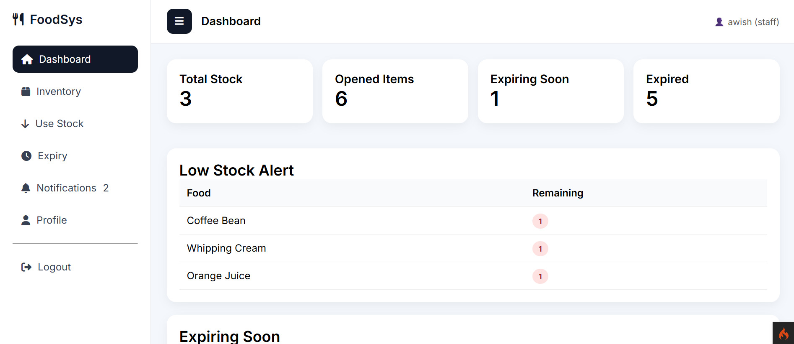

My Blog Posts
My Journey in Software Development
My interest in programming began during secondary school, where I started exploring the basics of coding through self-learning. This early exposure encouraged me to understand how software, websites, and applications are developed. I later continued my studies in Matriculation under the Computer Science course, which strengthened my foundation in computing and problem-solving. This experience further motivated me to pursue a Bachelor's Degree in Computer Science, majoring in Software Development.
Building My Smart Food Expiry System

One of the most meaningful projects I have worked on is the Smart Food Expiry Tracking System. This project was developed to help businesses in the food and beverage sector monitor food items more systematically and reduce the risk of using expired products. The system focuses on tracking packaging expiry dates, opened-item expiry dates, and generating reminders before the items expire.
Through this project, I learned how to apply software development concepts to solve a real-world problem. I worked with features such as inventory management, expiry notifications, user roles, and rule-based reminders. This experience helped me improve my understanding of database design, system logic, and user-friendly interface development.
Building Skills for the Future
As a Software Development student, I believe that continuous learning is important in keeping up with the fast-changing technology industry. Through every project and assignment, I try to improve my technical skills, problem-solving ability, and confidence in using different tools and technologies. These experiences help me prepare for future opportunities in the software development field.